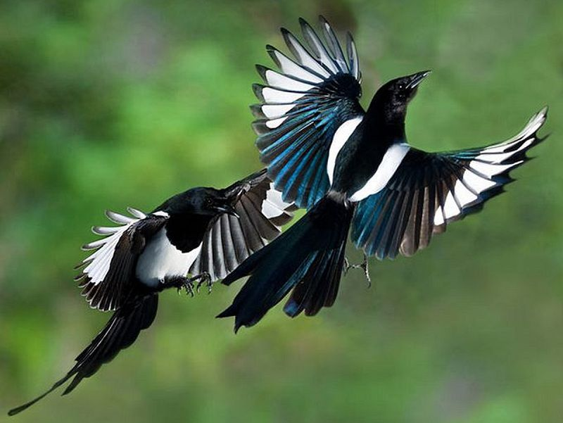
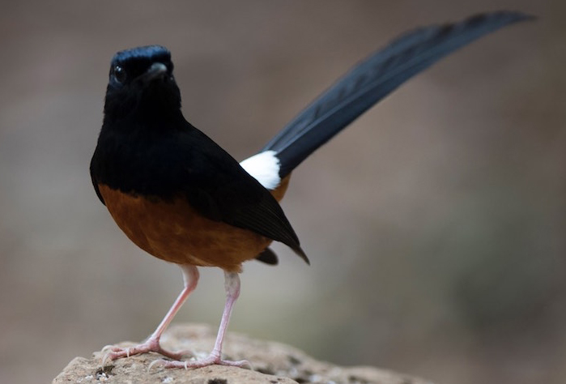
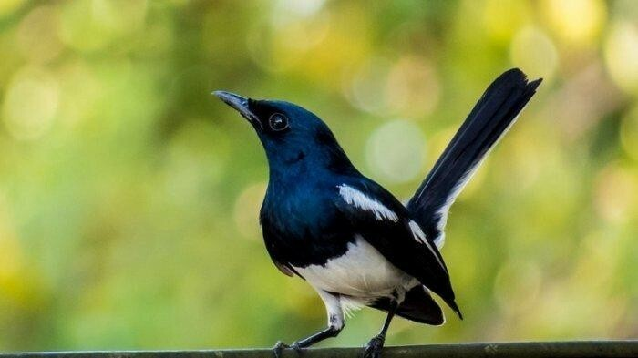

Chim Chích Chòe: Phân loại cách nuôi và chăm sóc chim căng lửa hót hay
Hiện nay, chọn chim Chích Chòe làm thú nuôi đã trở thành thú vui của nhiều người. Nhưng làm cách nào để có một chú chích chòe đẹp mã và đặc biệt hót hay thì không phải ai cũng biết. Bài viết sau đây chúng tôi sẽ chia sẻ cho bạn một số cách chăm sóc để có một chú chích chòe hót hay.
Chim Chích Chòe là chim gì?
Chích chòe là một loài chim có kích thước trung bình, thức ăn chủ yếu là sâu bọ và một số quả chín. Chúng thuộc chi Copsychus sensu lato và Enicurus.
Trước đây Chích Chòe được phân loại trong họ Hoét (Turdidae), nhưng hiện nay thông thường hay được coi là một phần của họ Đớp ruồi (Muscicapidae).
Chim Chích chòe được phân bố trong các cánh rừng và vườn ở châu Phi và châu Á. Chúng là tổ trên các mỏm cây, hốc đá… Tổ của chúng được lót bằng cỏ, tảo hoặc lông của các loài động vật khác.
Thời gian sinh sản của chim Chích Chòe từ tháng 1 đến tháng 6 (chủ yếu từ tháng 3-5). Mỗi lần sinh sản, chim mái sẽ sinh từ 3-5 quả trứng. Màu của trứng cũng rất đa dạng: Màu xanh nhạt, màu hồng, hoặc chấm nâu… Ở Việt Nam, loài chim này đang rất được ưa chuộng nuôi làm cảnh bởi vẻ đẹp cũng như giọng hót cực hay của chúng. Hãy tiếp tục tìm hiểu chi tiết về loài chim này nhé!
Phân loại chim Chích Chòe
Chim Chích chòe là một loài chim nhỏ, và ở Việt nam chúng ta có 2 loại chích chòe rất phổ biến và được nhiều người ưa thích là chích chòe than và chích chòe lửa. Tuy là đều một giống loài nhưng cách chăm sóc 2 loại chim cảnh này có nhiều điều khác nhau. Sau đây chúng tôi sẻ chia sẻ cho bạn cách chăm sóc 2 loại này nhé!
Chim Chích Chòe than
Là một loài chim đặc biệt với màu đen làm chủ đạo và pha một ít trắng thì loài chích chòe đen khá dễ để nhận diện. Đối với một chú chích chòe đen trưởng thành thì chiều dài của nó vào khoảng 19cm (bao gồm cái đuôi dài được dựng thẳng đứng). Chúng có mặt ở nhiều nơi bao gồm cả đô thị cũng như rừng.
Để nuôi được một chú chim chích chòe than hót hay thì việc đầu tiên là bạn cần giữ căng lửa cho nó. Và để nuôi một chú chích chòe than có thể căng lửa thì bạn hãy làm những việc sau nhé.
